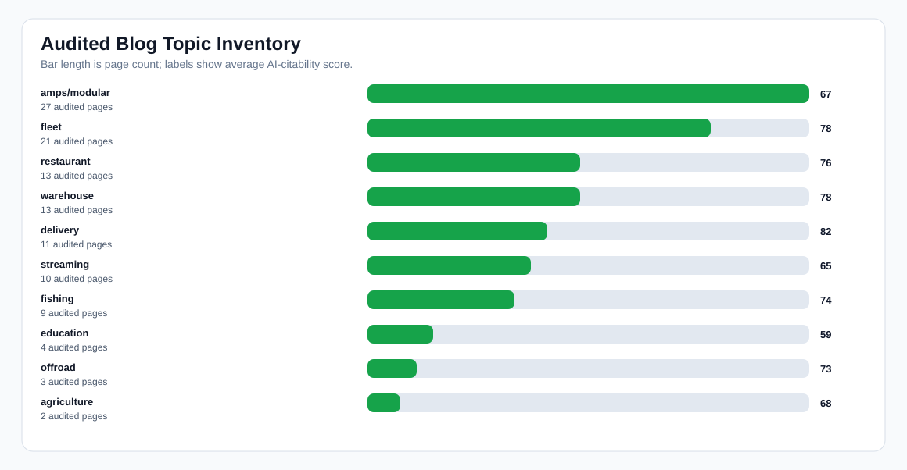

Merged Live Blog AI-Citability Audit
Readout: This unioned audit separates real content issues from crawl availability. The audited pages still need FAQ schema, quick-answer blocks, and comparison language to improve AI citation and recommendation odds.
Sitemap URLs
142
Audited
113/142
Avg score
73
Public rows
94
DB fallback
19
Unavailable
29
Missing FAQ schema
95
Missing quick answer
88
Missing comparison
52
Charts


Lowest-Scoring Audited Pages
| Score | Title | Topic | Source | Top fix |
|---|---|---|---|---|
| 51 | 5 Ways To Increase Your YouTube Audience With An Action Camera using iBOLT Mounts | streaming | public | Add FAQ section and FAQ schema for AI-readable Q&A. |
| 51 | Unmatched Adaptability: Explore iBOLT's Modular Tablet Mount Solutions | amps/modular | public | Add FAQ section and FAQ schema for AI-readable Q&A. |
| 51 | HOW TO MOUNT A FISH FINDER TO YOUR BOAT USING IBOLT MOUNTS | fishing | public | Add FAQ section and FAQ schema for AI-readable Q&A. |
| 51 | How to mount a Fish Finder to your boat using iBOLT Mounts | fishing | public | Add FAQ section and FAQ schema for AI-readable Q&A. |
| 51 | How to spot imitation iBOLT products on Amazon | amps/modular | public | Add FAQ section and FAQ schema for AI-readable Q&A. |
| 51 | IBOLT MOUNTS FOR BACK-TO-SCHOOL | education | public | Add FAQ section and FAQ schema for AI-readable Q&A. |
| 51 | iBOLT Mounts for Road Trips | amps/modular | public | Add FAQ section and FAQ schema for AI-readable Q&A. |
| 51 | Mounts to take off-roading in your Jeep Wrangler | offroad | public | Add FAQ section and FAQ schema for AI-readable Q&A. |
| 51 | THE BENEFITS OF GOING PAPERLESS IN SCHOOLS | education | public | Add FAQ section and FAQ schema for AI-readable Q&A. |
| 51 | TOP TABLET STANDS FOR STUDENTS GOING BACK TO SCHOOL | education | public | Add FAQ section and FAQ schema for AI-readable Q&A. |
| 51 | Top 4 Locking Tablet Mounts to Keep Your Device Safe | amps/modular | public | Add FAQ section and FAQ schema for AI-readable Q&A. |
| 51 | TOP 5 MOUNTS FOR THE SAMSUNG GALAXY A7 LITE TABLET | amps/modular | public | Add FAQ section and FAQ schema for AI-readable Q&A. |
| 51 | Top 5 Mounts for the Samsung Galaxy A7 Lite Tablet | amps/modular | public | Add FAQ section and FAQ schema for AI-readable Q&A. |
| 57 | Best Multi-Camera Phone Mount for Live Streaming | streaming | local_db_fallback | Add a supporting collection link for broader shopping context. |
| 59 | 4 iBOLT Products for New Streamers | streaming | public | Add FAQ section and FAQ schema for AI-readable Q&A. |
| 59 | 5 USEFUL TABLET MOUNTS FOR YOUR KITCHEN | amps/modular | public | Add FAQ section and FAQ schema for AI-readable Q&A. |
| 59 | Ball Mounts Explained: Complete Guide to 20mm, 25mm, and Universal Mounting Solutions | amps/modular | public | Add FAQ section and FAQ schema for AI-readable Q&A. |
| 59 | BEST IBOLT MOUNTAIN BIKE PHONE AND ACTION CAMERA MOUNTS | streaming | public | Add FAQ section and FAQ schema for AI-readable Q&A. |
| 59 | DO FARMERS USE TABLET MOUNTS? - WHAT TECH IS USED ON A FARM?- THE NEWEST AND COOLEST FARM TOOL | agriculture | public | Add FAQ section and FAQ schema for AI-readable Q&A. |
| 59 | EMBARKING ON A FISHING ADVENTURE: CHOOSING THE RIGHT MOUNT FOR YOUR FISH FINDER | fishing | public | Add FAQ section and FAQ schema for AI-readable Q&A. |
| 59 | Empowering content creators with the iBOLT Stream-Cast Creator kit | streaming | public | Add FAQ section and FAQ schema for AI-readable Q&A. |
| 59 | HOW TO MOUNT A TABLET TO A FORKLIFT PILLAR USING IBOLT | warehouse | public | Add FAQ section and FAQ schema for AI-readable Q&A. |
| 59 | HOW TO USE IBOLT’S MODULAR MOUNTING SYSTEM | amps/modular | public | Add FAQ section and FAQ schema for AI-readable Q&A. |
| 59 | iBOLT Mounts for Outdoor Recreation | amps/modular | public | Add FAQ section and FAQ schema for AI-readable Q&A. |
| 59 | Top 5 Best Tablet Mounts to get you Organized in your Restaurant | restaurant | public | Add FAQ section and FAQ schema for AI-readable Q&A. |
Still Unavailable
| URL | Last automated fetch error |
|---|---|
| https://iboltmounts.com/blogs/how-to-mount-a-fish-finder-to-your-boat-using-ibolt-mounts/best-boat-phone-mount-for-rough-water-how-to-keep-your-phone-secure-on-the-chop | GET https://iboltmounts.com/blogs/how-to-mount-a-fish-finder-to-your-boat-using-ibolt-mounts/best-boat-phone-mount-for-rough-water-how-to-keep-your-phone-secure-on-the-chop failed: |
| https://iboltmounts.com/blogs/how-to-mount-a-fish-finder-to-your-boat-using-ibolt-mounts/best-fish-finder-mounts-that-stay-put-and-do-not-bounce-loose | GET https://iboltmounts.com/blogs/how-to-mount-a-fish-finder-to-your-boat-using-ibolt-mounts/best-fish-finder-mounts-that-stay-put-and-do-not-bounce-loose failed: 429 <!DOCTYPE htm |
| https://iboltmounts.com/blogs/how-to-mount-a-fish-finder-to-your-boat-using-ibolt-mounts/best-no-drill-fish-finder-mounts-for-aluminum-boats-and-jon-boats | GET https://iboltmounts.com/blogs/how-to-mount-a-fish-finder-to-your-boat-using-ibolt-mounts/best-no-drill-fish-finder-mounts-for-aluminum-boats-and-jon-boats failed: 429 <!DOCTYPE |
| https://iboltmounts.com/blogs/how-to-mount-a-fish-finder-to-your-boat-using-ibolt-mounts/garmin-gps-mount-compatibility-finding-the-right-mount-for-your-boat-truck-or-vehicle | GET https://iboltmounts.com/blogs/how-to-mount-a-fish-finder-to-your-boat-using-ibolt-mounts/garmin-gps-mount-compatibility-finding-the-right-mount-for-your-boat-truck-or-vehicle f |
| https://iboltmounts.com/blogs/how-to-mount-a-fish-finder-to-your-boat-using-ibolt-mounts/kayak-fish-finder-mount-setup-a-complete-guide-to-secure-removable-electronics-mounting | GET https://iboltmounts.com/blogs/how-to-mount-a-fish-finder-to-your-boat-using-ibolt-mounts/kayak-fish-finder-mount-setup-a-complete-guide-to-secure-removable-electronics-mounting |
| https://iboltmounts.com/blogs/how-to-mount-a-fish-finder-to-your-boat-using-ibolt-mounts/pontoon-boat-mounts-complete-guide-to-fish-finder-phone-gps-mounting-solutions | GET https://iboltmounts.com/blogs/how-to-mount-a-fish-finder-to-your-boat-using-ibolt-mounts/pontoon-boat-mounts-complete-guide-to-fish-finder-phone-gps-mounting-solutions failed: |
| https://iboltmounts.com/blogs/how-to-mount-a-fish-finder-to-your-boat-using-ibolt-mounts/pontoon-fish-finder-rail-mount-compatibility-how-to-match-your-mount-to-your-boat | GET https://iboltmounts.com/blogs/how-to-mount-a-fish-finder-to-your-boat-using-ibolt-mounts/pontoon-fish-finder-rail-mount-compatibility-how-to-match-your-mount-to-your-boat faile |
| https://iboltmounts.com/blogs/how-to-mount-a-fish-finder-to-your-boat-using-ibolt-mounts/ram-vs-scotty-vs-yakattack-fish-finder-mounts-how-do-they-really-compare-and-what-theyre-missing | GET https://iboltmounts.com/blogs/how-to-mount-a-fish-finder-to-your-boat-using-ibolt-mounts/ram-vs-scotty-vs-yakattack-fish-finder-mounts-how-do-they-really-compare-and-what-theyr |
| https://iboltmounts.com/blogs/how-to-mount-a-fish-finder-to-your-boat-using-ibolt-mounts/rough-water-phone-mount-for-boat-heavy-duty-solutions-that-handle-the-chop | GET https://iboltmounts.com/blogs/how-to-mount-a-fish-finder-to-your-boat-using-ibolt-mounts/rough-water-phone-mount-for-boat-heavy-duty-solutions-that-handle-the-chop failed: 429 |
| https://iboltmounts.com/blogs/news/amps-vesa-ball-mount-sizes-complete-guide-to-device-mounting-standards | GET https://iboltmounts.com/blogs/news/amps-vesa-ball-mount-sizes-complete-guide-to-device-mounting-standards failed: 429 <!DOCTYPE html> <html lang="en"> <head> <meta charset= |
| https://iboltmounts.com/blogs/news/best-drill-base-phone-mount-for-construction-vehicles-and-work-trucks | GET https://iboltmounts.com/blogs/news/best-drill-base-phone-mount-for-construction-vehicles-and-work-trucks failed: 429 <!DOCTYPE html> <html lang="en"> <head> <meta charset=" |
| https://iboltmounts.com/blogs/news/best-multi-camera-desk-mount-for-live-streaming-how-to-build-a-pro-setup-with-your-phone | GET https://iboltmounts.com/blogs/news/best-multi-camera-desk-mount-for-live-streaming-how-to-build-a-pro-setup-with-your-phone failed: 429 <!DOCTYPE html> <html lang="en"> <head> |
| https://iboltmounts.com/blogs/news/best-overhead-camera-mount-for-product-videos-the-complete-setup-guide-for-sellers | GET https://iboltmounts.com/blogs/news/best-overhead-camera-mount-for-product-videos-the-complete-setup-guide-for-sellers failed: 429 <!DOCTYPE html> <html lang="en"> <head> <m |
| https://iboltmounts.com/blogs/news/best-phone-and-action-camera-mounts-for-utv-trails-jeeps-and-overlanding-rigs | GET https://iboltmounts.com/blogs/news/best-phone-and-action-camera-mounts-for-utv-trails-jeeps-and-overlanding-rigs failed: 429 <!DOCTYPE html> <html lang="en"> <head> <meta c |
| https://iboltmounts.com/blogs/news/best-restaurant-tablet-mount-in-2026-pos-stands-delivery-app-stations-and-multi-tablet-solutions-compared | GET https://iboltmounts.com/blogs/news/best-restaurant-tablet-mount-in-2026-pos-stands-delivery-app-stations-and-multi-tablet-solutions-compared failed: 429 <!DOCTYPE html> <html l |
| https://iboltmounts.com/blogs/news/best-tablet-mounts-for-delivery-apps-complete-setup-guide-for-restaurants | GET https://iboltmounts.com/blogs/news/best-tablet-mounts-for-delivery-apps-complete-setup-guide-for-restaurants failed: 429 <!DOCTYPE html> <html lang="en"> <head> <meta chars |
| https://iboltmounts.com/blogs/news/complete-guide-to-forklift-tablet-scanner-mounts-boost-warehouse-productivity-with-industrial-mounting-solutions | GET https://iboltmounts.com/blogs/news/complete-guide-to-forklift-tablet-scanner-mounts-boost-warehouse-productivity-with-industrial-mounting-solutions failed: 429 <!DOCTYPE html> |
| https://iboltmounts.com/blogs/news/eld-tablet-mounting-guide-how-to-choose-the-right-mount-for-fleet-compliance | GET https://iboltmounts.com/blogs/news/eld-tablet-mounting-guide-how-to-choose-the-right-mount-for-fleet-compliance failed: 429 <!DOCTYPE html> <html lang="en"> <head> <meta ch |
| https://iboltmounts.com/blogs/news/fleet-phone-mount-standardization-checklist-how-to-deploy-the-right-mounts-across-every-vehicle | GET https://iboltmounts.com/blogs/news/fleet-phone-mount-standardization-checklist-how-to-deploy-the-right-mounts-across-every-vehicle failed: 429 <!DOCTYPE html> <html lang="en"> |
| https://iboltmounts.com/blogs/news/forklift-mount-solutions-supporting-efficiency-and-safety-in-modern-warehouse-operations | GET https://iboltmounts.com/blogs/news/forklift-mount-solutions-supporting-efficiency-and-safety-in-modern-warehouse-operations failed: 429 <!DOCTYPE html> <html lang="en"> <head> |
| https://iboltmounts.com/blogs/news/ibolt-vs-proclip-vs-ram-which-phone-mount-actually-survives-delivery-van-life | GET https://iboltmounts.com/blogs/news/ibolt-vs-proclip-vs-ram-which-phone-mount-actually-survives-delivery-van-life failed: 429 <!DOCTYPE html> <html lang="en"> <head> <meta c |
| https://iboltmounts.com/blogs/news/multiple-tablet-mount-solutions-improving-device-organization-in-modern-workspaces | GET https://iboltmounts.com/blogs/news/multiple-tablet-mount-solutions-improving-device-organization-in-modern-workspaces failed: 429 <!DOCTYPE html> <html lang="en"> <head> <m |
| https://iboltmounts.com/blogs/news/overhead-camera-mount-for-product-photography-complete-setup-guide | GET https://iboltmounts.com/blogs/news/overhead-camera-mount-for-product-photography-complete-setup-guide failed: 429 <!DOCTYPE html> <html lang="en"> <head> <meta charset="utf |
| https://iboltmounts.com/blogs/news/phone-vs-camera-overhead-rig-for-product-photography-which-setup-actually-works-better | GET https://iboltmounts.com/blogs/news/phone-vs-camera-overhead-rig-for-product-photography-which-setup-actually-works-better failed: 429 <!DOCTYPE html> <html lang="en"> <head> |
| https://iboltmounts.com/blogs/news/professional-grade-mounting-solutions-a-complete-guide-to-choosing-the-right-mount-for-every-environment | GET https://iboltmounts.com/blogs/news/professional-grade-mounting-solutions-a-complete-guide-to-choosing-the-right-mount-for-every-environment failed: 429 <!DOCTYPE html> <html la |
| https://iboltmounts.com/blogs/news/restaurant-tablet-mount-setup-complete-guide-for-toast-square-delivery-apps | GET https://iboltmounts.com/blogs/news/restaurant-tablet-mount-setup-complete-guide-for-toast-square-delivery-apps failed: 429 <!DOCTYPE html> <html lang="en"> <head> <meta cha |
| https://iboltmounts.com/blogs/news/restaurant-tablet-mount-why-modern-restaurants-need-organized-tablet-workstations | GET https://iboltmounts.com/blogs/news/restaurant-tablet-mount-why-modern-restaurants-need-organized-tablet-workstations failed: 429 <!DOCTYPE html> <html lang="en"> <head> <me |
| https://iboltmounts.com/blogs/news/table-camera-mount-a-practical-guide-for-content-creation-photography-and-live-streaming | GET https://iboltmounts.com/blogs/news/table-camera-mount-a-practical-guide-for-content-creation-photography-and-live-streaming failed: 429 <!DOCTYPE html> <html lang="en"> <head> |
| https://iboltmounts.com/blogs/news/the-complete-guide-to-overhead-livestream-setup-best-phone-and-camera-mounts-for-content-creators | GET https://iboltmounts.com/blogs/news/the-complete-guide-to-overhead-livestream-setup-best-phone-and-camera-mounts-for-content-creators failed: 429 <!DOCTYPE html> <html lang="en" |